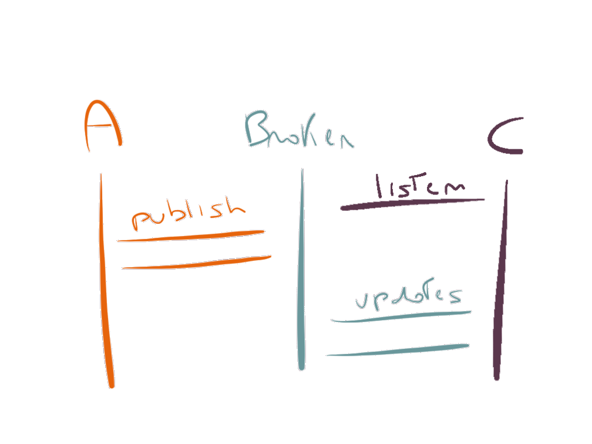

MQTT and Node.js
A messagging protocol for the Internet of Things
We #code
How do we #code an app?
We call a Web Server!

How do we #code a Thing?
How do we #code a Thing?
Problems:
- Power Consumpution/Battery
- Sits behind a firewall
- Reacts to real-world events fast
- Scalable solution?
MQTT

MQTT
Facts
- Binary Protocol
- Publish/Subscribe
- Standard
- Offline/Disconnected Mode
MQTT vs WebSocket
It's better to use MQTT or WebSocket for live notification in our apps?
- 93x faster throughput
- 11.89x less battery to send
- 170.9x less battery to receive
- 1/2 as much power to keep connection open
- 8x less network overhead
Measured on Android (Source: http://mobilebit.wordpress.com/2013/05/03/rest-is-for-sleeping-mqtt-is-for-mobile/)
Heading 2
Heading 3
… more 3rd-level heading
… and a little more
… just one more!
And a bit of paragraph here
Authored in Markdown
Single index.md file (like this one), with a build.js (like this one) script that converts to the slides, including formatting and even syntax highlighting.
- build.js also has a
--watch
var foo = require('bar')
if (foo['woohoo'] === false)
throw new Error('Whoa!')
And GitHub-style inline = code.
Break out of Markdown
Inline HTML supported so you can control styling:
| Eh? | Ooooo, a white box! | ||||
| What is this? | I don't know, but it's awesome! | ||||
Animated bullet-points
- Bullet points
- ... are animated
- ... by adding the
- ...
data-bespoke-bulletattribute to html elements